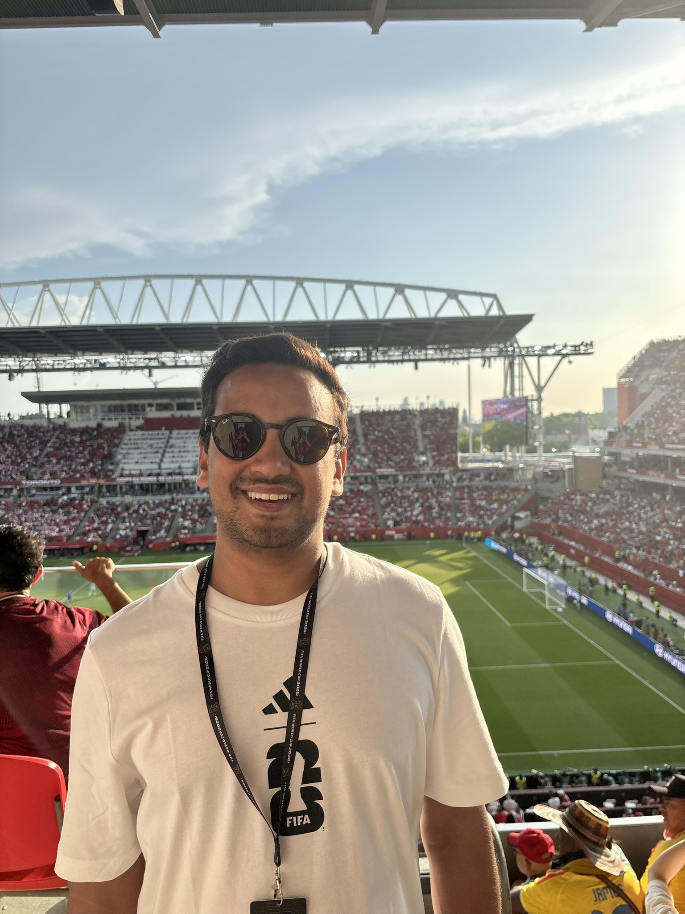

Hey, I’m
Nuwan.
I lead Data & AI Product at AIMCo. My background is in engineering, with deep experience building scalable infrastructure to bring complex AI/ML models into production. Today, I’m especially interested in how AI is changing software development and what that means for engineering leadership.
Before AIMCo, I led Data & AI at OMERS Ventures, where I built a portfolio intelligence platform to help investment teams make informed decisions and support the growth of early-stage technology companies. Earlier, at OMERS and integrate.ai, I worked on the infrastructure behind production AI systems, including transformer models and federated learning.
I hold a Master of Science in Computer Science, with a research focus on machine learning, and a Bachelor of Computing with a specialization in biomedical computing, both from Queen’s University.
That experience shapes how I lead. I stay close to the technical details, give teams context for the decisions they own, and set clear expectations for what we deliver. As the tools evolve, I’m keen to learn how others are adapting.

What I’m thinking about
Always a work in progress.As more of the stack is abstracted,
the job changes.
As more of the stack is abstracted away, I think engineering leaders need to reconsider where they focus their attention. Teams can build on capabilities they once had to develop themselves. Leaders still need the technical depth to understand what sits underneath, where it can fail, and which decisions will be costly to reverse.
The question I keep coming back to is how engineers develop judgment when AI handles more of the implementation. Much of that judgment comes from working through difficult problems and seeing the consequences of a decision. I think leaders need to be deliberate about preserving those opportunities: involving engineers in design decisions, evaluating what gets generated, and keeping them accountable for how systems behave in production. I’m interested in how teams can build faster while deepening their understanding of what they’re building.
Say hello.
If you’re exploring how AI changes engineering or leadership, I’d enjoy comparing notes.
I’m interested in what you’re learning, especially the parts that surprised you.